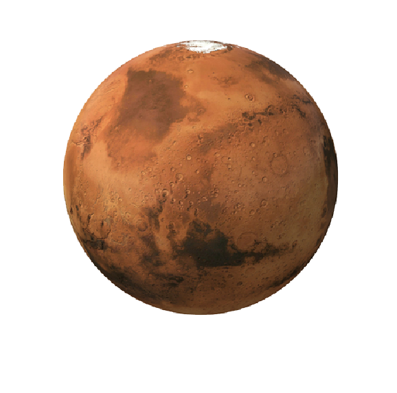

| planet | Earth |
|---|---|
| Mass | 5.97x10^ 24kilograms |
| Diameter | 510.1 million square kilometers |
| surface area | 1.8trillion cubic kilometers |
| Distance from sun | Approximately 149.6 million kilometers |
| satellites | one natural satellite(the Moon) |
Mars, also known as the Red Planet, is the fourth planet from the Sun in our solar system. It is named after the Roman god of war due to its reddish appearance. Mars is a terrestrial planet with a thin atmosphere, and it has long been a subject of fascination and exploration for scientists and space enthusiasts alike.
Mars is known for its diverse surface features, including vast plains, towering volcanoes, deep canyons, and polar ice caps. The largest volcano in the solar system. In conclusion, Mars is a fascinating planet with unique physical characteristics and a rich history of exploration. Its potential for harboring life and its proximity to Earth make it an ideal target for future scientific missions.
